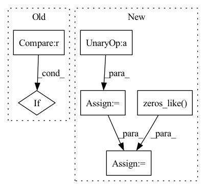

Pattern ID :1362
Before Change
return softmax
def forward(self, logits, samples, soft):
if samples is None :
return self.gumbel_softmax(logits, self._temperature, self._eps, hard=True)
else:
return -torch.sum(-samples * F.log_softmax(logits, -1), -1)
After Change
class GumbelSoftmax(nn.Module):
def forward(self, logits: torch.Tensor, tau: float = 1, hard: bool = False, dim: int = -1):
gumbels = -torch.empty_like(logits, memory_format=torch.legacy_contiguous_format).exponential_().log() // ~Gumbel(0,1)
gumbels = (logits + gumbels) / tau // ~Gumbel(logits,tau)
y_soft = gumbels.softmax(dim)
if hard:
// Straight through.
index = y_soft.max(dim, keepdim=True)[1]
y_hard = torch.zeros_like( logits, memory_format=torch.legacy_contiguous_format) .scatter_(dim, index, 1.0)
ret = y_hard - y_soft.detach() + y_soft
else:
// Reparametrization trick.In pattern: SUPERPATTERN
Frequency: 3
Non-data size: 6
Instances Fragment ID: 3957371
Project Name: xiaosu-zhu/mcquic
Commit Name: e12be331e275549e5b8a7ef6a7c8dbf6d4e387bf
Time: 2021-04-08
Author: xiaosu.zhu@outlook.com
File Name: src/mcqc/layers/gumbelSoftmax.py
M Class Name: GumbelSoftmax
N Class Name: GumbelSoftmax
M Method Name: forward(5)
N Method Name: forward(4)
M Parent Class: nn.Module
N Parent Class: nn.Module
M File Name: src/mcqc/layers/gumbelSoftmax.py
N File Name: src/mcqc/layers/gumbelSoftmax.py
M Start Line: 40
M End Line: 44
N Start Line: 8
N End Line: 21
Before Change
// help auto-solve a frequent area of confusion around input masks in auto-regressive
// if user supplies a mask that is only off by one from the source sequence, resolve it for them
mask = kwargs.get("mask", None)
if mask is not None and mask.shape[1] == x.shape[1] :
mask = mask[:, :-1]
kwargs["mask"] = mask
out = self.net(xi, **kwargs)After Change
if self.mask_prob > 0.:
rand = torch.randn(inp.shape, device = x.device)
rand[:, 0] = -torch.finfo(rand.dtype).max // first token should not be masked out
num_mask = min(int(seq * self.mask_prob), seq - 1)
indices = rand.topk(num_mask, dim = -1).indices
mask = ~torch.zeros_like( inp) .scatter(1, indices, 1.).bool()
kwargs.update(context_mask = mask)
out = self.net(inp, **kwargs) Fragment ID: 3957404
Project Name: lucidrains/x-transformers
Commit Name: 595a4745d532c20b8ebd310256c342e946a4cef7
Time: 2022-11-02
Author: lucidrains@gmail.com
File Name: x_transformers/autoregressive_wrapper.py
M Class Name: AutoregressiveWrapper
N Class Name: AutoregressiveWrapper
M Method Name: forward(2)
N Method Name: forward(2)
M Parent Class: nn.Module
N Parent Class: nn.Module
M File Name: x_transformers/autoregressive_wrapper.py
N File Name: x_transformers/autoregressive_wrapper.py
M Start Line: 107
M End Line: 118
N Start Line: 122
N End Line: 142
Before Change
final_target_logit = torch.where(
target_logit > self.th, cos_theta_m, target_logit - self.mm
)
if cfg["USE_AMP"] == True and cfg["OPT_LEVEL"] == "O1" :
final_target_logit = final_target_logit.half()
cos_theta.scatter_(1, label.view(-1, 1).long(), final_target_logit)
output = cos_theta * self.s
return outputAfter Change
kernel_norm = F.normalize(self.weight, dim=0)
cos_theta = torch.mm(embbedings, kernel_norm).clamp(-1, 1)
sin_theta = torch.sqrt(1.0 - torch.pow(cos_theta, 2))
cos_theta_m = cos_theta * self.cos_margin - sin_theta * self.sin_margin
// torch.where doesn"t support fp16 input
is_half = cos_theta.dtype == torch.float16
cos_theta_m = torch.where(
cos_theta > self.min_cos_theta, cos_theta_m, cos_theta.float() - self.m_am,
)
if is_half:
cos_theta_m = cos_theta_m.half()
index = torch.zeros_like( cos_theta)
index.scatter_(1, label.data.view(-1, 1), 1)
index = index.byte().bool()
output = cos_theta * 1.0
output[index] = cos_theta_m[index]
output *= self.s
return output
Fragment ID: 3957408
Project Name: cavalleria/cavaface
Commit Name: 98a21048f5dce435a6639a288dafc4c6be61be05
Time: 2021-08-25
Author: 605370459@qq.com
File Name: head/metrics.py
M Class Name: ArcFace
N Class Name: ArcFace
M Method Name: forward(3)
N Method Name: forward(3)
M Parent Class: nn.Module
N Parent Class: nn.Module
M File Name: head/metrics.py
N File Name: head/metrics.py
M Start Line: 81
M End Line: 103
N Start Line: 67
N End Line: 86